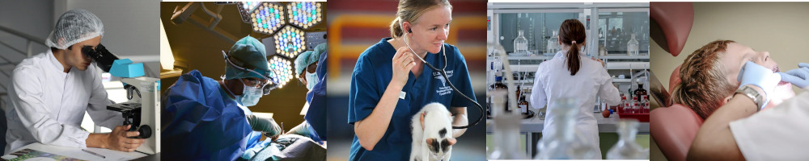

1B - rozszerzone treści nauczania z biologii, chemii, matematyki
Powinieneś wybrać klasę o takim nachyleniu przedmiotowym, jeśli:
- pragniesz studiować medycynę, stomatologię, farmację, rehabilitację, technologię chemiczną,
dietetykę, kosmetologię, biotechnologię, resocjalizację, weterynarię, fizjoterapię na
Uniwersytecie Medycznym w Warszawie, UM w Katowicach, UM w Lublinie, w Collegium
Medicum UJ w Krakowie;
- interesujesz się różnymi zjawiskami zachodzącymi w świecie przyrody;
- chcesz rozwijać swoje biologiczne zainteresowania;
- jesteś ciekawy wykładów na Politechnice Rzeszowskiej i zajęć laboratoryjnych na KUL-u
z biologii i chemii;
- myślisz o przystąpieniu do egzaminu maturalnego z biologii, chemii, matematyki na poziomie
rozszerzonym.
Przy rekrutacji do klasy 1B przedmioty punktowane to: język polski, matematyka,
język obcy, historia/fizyka/biologia/geografia/chemia